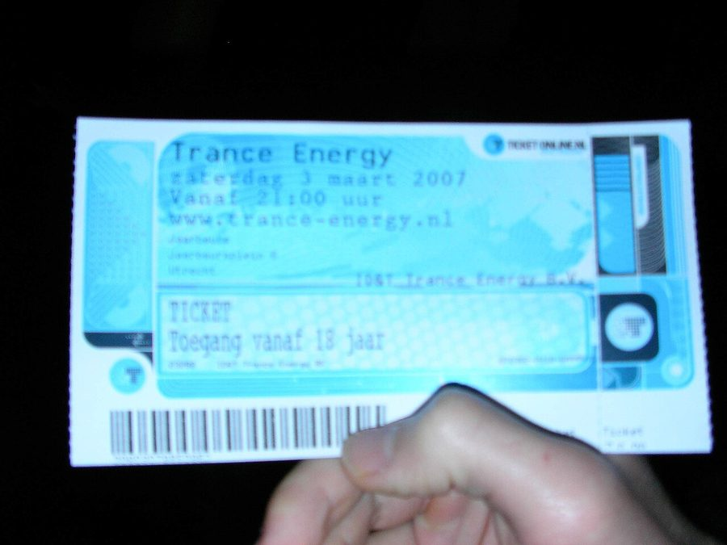

tyDi talks Trance Energy



Trance fans around the country have been looking towards the Easter break for quite some time as a realisation of all their party dreams coming true. It’ll represent the debut of the Trance Energy brand in Australia, bringing with it a dream DJ lineup as well as the promise of plenty of cutting-edge production and spectacle. However, the original party that the tour is based on will be happening this very weekend over in Holland, with an amazing lineup that includes Armin van Buuren, Paul van Dyk, John O’Callaghan... And Australia’s very own tyDi.
As was revealed on ITM late last year, the Sony inthemix50 #1 winner will be playing the mainstage over at Trance Energy in Holland. ITM caught up with him earlier this week before he jetted off to play the sold-out party, and he had this to say about his major coup. “It was quite an honor to be asked to play on the main stage of the world’s biggest trance event… especially on the other side of the world,” tyDi told ITM. “I have had a lot of fun performing alongside Armin and PVD before, and I am sure it will be just as much fun to play with them in Holland.”
When it comes to spectacular production, tyDi says he’s expecting a whole lot from his trip to Trance Energy. “Have you seen the videos? It will be massive. Not many people in the world are able to put on events as big as Trance Energy or Sensation, the production is mind blowing. I remember playing at Sensation and watching water fountains and flame throwers going off only meters in front of me.”
In a sense, tyDi’s trip to Holland will act as a warmup for his headline duties on the Easter Trance Energy tour across Australia. It’ll make for a massive debut for the brand in the country, with no less than four massive events in as many days. “I am expecting a pretty full on weekend of amazing shows with very little sleep,” he told ITM. “I will have just recently played at Trance Energy in Holland, and will be just as pumped to showcase my new productions in my own country. This is the type of event that truly lets me play whatever I want to, I am so excited!”
Stay tuned for the full-length interview with tyDi in the leadup to the Oz tour. ITM will also be at Trance Energy in Holland this weekend, so keep your eyes peeled to the site and our Festival Page for all the post-event coverage you can handle! Just in case you’ve forgotten, here’s what the party’s gonna look like…